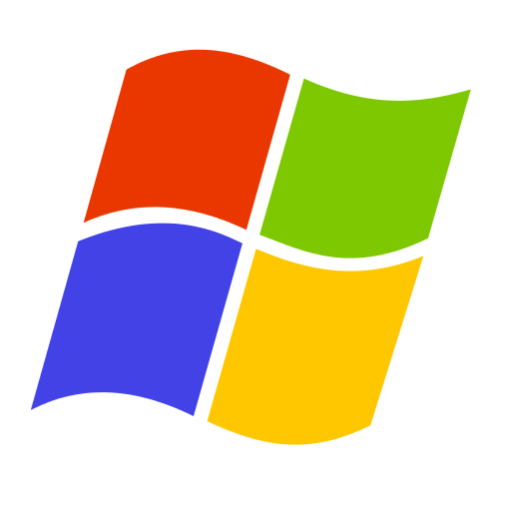
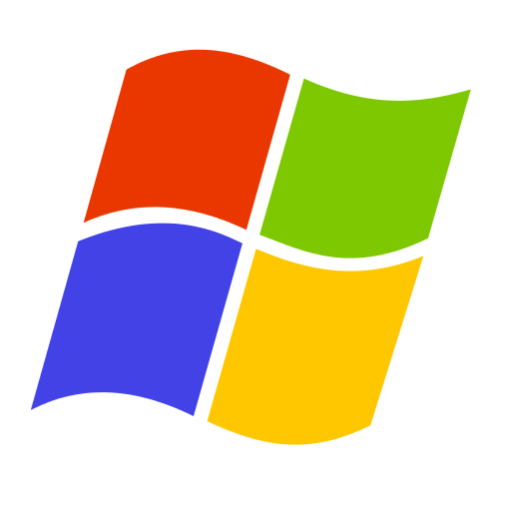

- Arquitetura
- S.O Codigo Fechado
- S.O Codigo Aberto
- Editor de texto
- Planilha eletrônica
Sistemas operacionais de código fechado são aqueles que não permitem o usuário de baixar aplicativos, softwares, que não sejam pertencentes a própria desenvolvedora do S.O, exemplo, dispositivos IOS, são impossibilitados de baixar softwares android. Windows Phone é de código fechado, portanto todos os aplicativos pertencem a Microsoft. Se computadores Windows atuais fossem de código fechado (o que não é verdade), o usuário não iria poder navegar através do google chrome, internet explorer, Firefox, Opera, etc; somente seria permitido o uso do navegador Edge, que pertence a Microsoft.

Também podemos definir S.Os de código fechado como aqueles cujo seu código-fonte não é disponível para o usuário, e esse tipo de Sistema Operacional é um tanto comum como Windows e Linux.
Digite "type" seguido do nome do arquivo e tecle Enter. Se o arquivo for grande demais para a tela, adicione o parâmetro “| more” e ele será mostrado parcialmente, para ver o resto, tecle Enter.
O modo texto como diz o nome, é um modo de exibição que se resume em linhas de texto ou códigos. Podemos ver um formato parecido no terminal do windows que é no modo texto, no modo texto podemos usar diversos códigos para configurações, como por exemplo a criação, manipulação e exclusão de diretórios através do terminal. Normalmente, o modo texto se resume a um retangulo com o fundo escuro e com um prompt, onde cada caracter conta como um espaço.
 

Para você navegar em seus diretórios, deve-se saber quais você tem, então digite o comando "dir", que irá listar todos os seus arquivos e diretórios. O comando "CD" te possibilitará entrar em pastas, já o "CD…" retornar a pasta anterior.

Diferente do modo gráfico, no modo texto, a navegação entre diretórios aparenta ser mais complicada e mais limitada á primeira vista. Dependendo do sistema operacional, a navegação entre diretórios pode variar, tanto na navegação quanto na execução de um diretório.
O comando "MD" cria pastas, possibilitando-te criar seus arquivos. A criação de diretórios aparenta ser mais fácil no modo gráfico, porém é mais simples no modo texto porque é apenas preciso digitar o código de criação de diretório e em seguida colocar o nome. Em alguns sistemas operacionais, a criação de um diretório pode utilizar comandos diferentes.
De maneira simples, o comando "Del" deleta os arquivos. Porém caso queira deletar algum arquivo ou diretório específico, é necessário digitar o código para deletar e o caminho e nome do arquivo caso esteja em outro diretório.
Deletar arquivos pelo modo texto tem suas vantagens, como por exemplo, é possível forçar a exclusão de um arquivo caso esteja sendo executado.
O comando responsável para a renomeação de arquivos é o "ren". Assim como a exclusão de um arquivo é possível alterar caso o mesmo ainda esteja aberto ou sendo executado porém há certos riscos.

É necessário que o arquivo esteja no mesmo diretório.
Informe o caminho caso esteja em outro diretório.
Rename funciona.
"Move" - move arquivos ou renomeia-os também. Iguual no anterior é necessário específicar o caminho para onde deseja mover o diretório também é possível mover mais de um diretório ao mesmo tempo e também renomer o arquivo como foi dito anteriormente.
O comando "copy" é utilizado para copiar um arquivo ou diretório.
Também possibilita copiar mais de um arquivo e ainda para outro local..
É necessário específicar para onde o arquivo vai.
A estrutura é: "Código" , "Origem" , "Destino"
Dependendo do que quer fazer, editar o nome (use o ren), “assoc” exibe ou modifica associações de extensões de arquivo. Esta parte a príncipio é mais limitada no modo texto pois não há softwares de edição.
A edição de arquivos pode variar dependendo do sistema operacional, tendo mais opções de edição e podendo até mudar a extensão de um arquivo.
É um tipo de interface como o nome diz que possui como principal característica elementos gráficos como ícones e outros indicadores visuais. A principal interação desta unidade é feita com o mouse e o teclado. O ambiente gráfico faz com que o uso do computador seja facilitado.
A área de trabalho ou desktop é o primeiro elemento que nos deparamos ao iniciar um computador de interface gráfica. É um lugar em que como diz o nome, pode ser usado para trabalho. Você pode salvar todos seus diretórios, imagens, imagem, documentos etc. Na área de trabalho e pode criar atalhos para ter acesso rápido a todos seus softwares.
A interface gráfica e a área de trabalho costumam trabalhar com o gerenciamento de janelas que é uma interface gráfica de usuário. O sistema de janela oferece suporte à dispositivos apontadores como o mouse, porém também utiliza e teclado e pode ser utilizada mais de uma janela ao mesmo tempo.
As configurações do sistema, no exemplo do Windows, ajudam a controlar os softwares que são executados automaticamente enquanto o Windows está em processo de inicialização, podendo então prejudicar o desempenho da máquina quando muito softwares são executados ao mesmo tempo.

As ferramentas do sistema são programas que otimizam o computador e melhoram o funcionamento. Dentre estes programas, é possível encontrar aqueles que liberam espaço na memória e fazem limpeza no disco. Essas ferramentas também configuram a máquina para atuar de certa forma quando houver um evento para otimizar o uso do computador.
Os acessórios no caso do Windows, são os softwares que vieram instalados juntos com a máquina, alguns exemplos deles são:
Alguns sistemas operacionais possuem um menu de ajuda ou um menu de suporte, um dos exemplos é o Windows. Para acessar o menu de suporte do Windows, abra a ferramenta executar e digite " services.msc " e localize o serviço “Ajuda e Suporte”. Dentro desta aba terá opções de ajuda.
O gerenciador de arquivos ou navegador de arquivos, atualmente eles são predominantemente softwares para interface gráfica. É utilizado para a criação e organização de diretórios em sistemas operacionais, suas principais funções são: deletar arquivos, mover arquivos, criar arquivos, fazer a manipulação de arquivos e diretórios.

Tomando como exemplo os dispositivos móveis do sistema operacional IOS, é possível acessar o gerenciamento de permissões de aplicativos de maneira bem prática, nas configurações (ajustes), e indo na seção “Privacidade” Lá é possível visualizar todos os aplicativos instalados no dispositivo e as permissões que eles recebem, como por exemplo, o acesso a galeria, a câmera, gravação de áudios e gerenciamento de contatos. Por questão de segurança é necessário se atentar aos limites que você usuário dará a determinado aplicativo, pois nem todos possuem certificado de segurança e política de privacidade, portanto dar demasiada liberdade a um software não confiável pode resultar na violação de sua privacidade e exposição de seus dados pessoais.
Continuando com o sistema operacional IOS, sua programação ainda fornece a possibilidade de criação de usuários, caso você tenha que compartilhar seu dispositivo com outra pessoa, porém não necessariamente compartilhar seus dados com ela. Assim, dispositivos Iphone dão a opção de criação de “contas” para um só celular. Essa opção não é exclusiva do IOS, pois há também em dispositivos mobile (móveis) Motorola, Samsung e Xiaomi (só que esses são código aberto).
Níveis de inicialização podem variar de acordo com os sistemas operacionais, já que cada software possui uma programação diferente com mecanismos diferentes. Tomando o Linux como exemplo, seus níveis de inicialização são denominados como RunLevels, que determinarão o que estará disponível ao usuário durante o processo de inicialização, como acesso a pastas. Cada nível de inicialização possui uma camada que toma uma diferente atitude conforme sua identificação. A camada 0 de inicialização desliga o sistema, a camada 1 é uma inicialização básica do modo monousuário, a camada 6 reinicia o sistema. Nas RunLevels do Linux a organização é bem próxima disso.
Há algumas maneiras alternativas de baixar um sistema operacional Linux num ambiente virtual, e uma dessas maneiras é por meio de pacotes.
O Ubuntu é uma versão do Linux disponível para download de várias formas, como em formato ISO por exemplo. Mas é possível instalar por meio de pacotes disponíveis no próprio site da Ubuntu, dê uma olhada:
Pacotes Ubuntu
A escolha da versão específica de uma máquina Linux é exclusivamente sua, você pode optar por versões mais antigas ou mais modernas, de acordo com o que for mais cômodo. Mas é muito importante ter em mente que as atualizações incluem uma maior variedade de programas, novos funcionamentos e é claro, um maior processamento. Isto tudo acarreta um maior tamanho nas máquinas virtuais, portanto se o seu PC não aguenta rodar um Ubuntu de última versão, instalá-lo só vai gerar complicações. Também é necessário tomar cuidado com versões antigas, pois elas podem ser ultrapassadas e obsoletas, portanto, seu uso acaba sendo inepto e isso pode atrapalhar no desempenho do usuário, dependendo de qual for seu propósito.
Programas consistem em softwares feitos por programadores, com funções específicas para auxiliar no uso e aproveitamento de um sistema operacional. Seja um explorador de arquivos, gerenciador de tarefas, navegador web, galeria de fotos ou reprodutor de vídeos, todos são exemplos de programas voltadas a certas funções que fornecem ao usuário uma maior gama de possibilidades ao usar a máquina, pois tornam seu uso mais abrangente e prático.
Certos programas possuem funções fundamentais que não devem faltar ao usuário, tal como explorador de arquivos, terminal e gerenciador de tarefas. Outros programas são um adicional, não são realmente necessários, porém estão ali para auxiliar o usuário sempre que ele precisar, como galeria e bloco de notas. E há os programas baixados pelo próprio usuário para cumprir funções específicas voltadas as necessidades particulares dele, tal como uma IDE, um simulador ou um jogo. Aqui estão alguns programas padrões de Linux e de Windows: